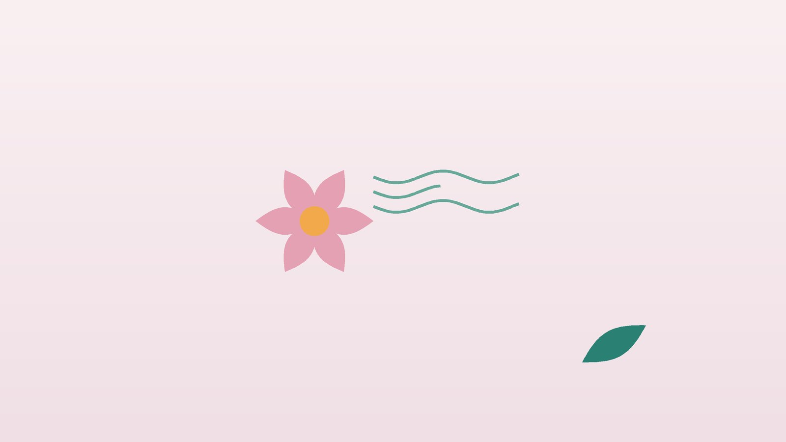

건강 칼럼 · 한방안이비인후과
냄새를 잘 못 맡는다면, 후각장애 원인 확인과 한방 관리

나의 후각, 이런 변화가 있나요?
- 커피나 음식 냄새가 예전보다 흐릿하다
- 맛이 밍밍해서 음식을 짜거나 달게 먹게 됐다
- 상한 음식이나 가스 냄새를 못 알아챈 적이 있다
- 익숙한 냄새가 역하거나 탄내처럼 다르게 느껴진다
- 아무것도 없는데 이상한 냄새가 난다
- 코가 늘 막혀 있거나 누런 콧물이 뒤로 넘어간다
이 체크리스트는 진단 도구가 아니라 상담이 필요한지 가늠해 보는 참고용입니다.
냄새는 왜 안 맡아질까요?
후각장애는 원인 자리에 따라 둘로 나눠 생각하면 쉽습니다. 콧속이 붓거나 코 용종, 축농증 때문에 냄새 분자가 코 천장까지 가지 못하는 전도성 후각장애와, 코 천장의 후각 신경이나 뇌의 냄새 처리 부위가 다친 감각신경성 후각장애입니다. 앞의 경우는 코막힘이 풀리면 좋아지는 경우가 많고, 뒤의 경우는 바이러스 감염 뒤나 머리를 부딪친 뒤, 나이가 들면서 생깁니다.
유럽 비과학회의 후각장애 입장문(Hummel 등)은 감염 후 후각장애에 후각 훈련(olfactory training)을 권합니다. 장미, 레몬, 정향, 유칼립투스처럼 성격이 다른 향을 하루 두 번, 향마다 10~20초씩 집중해서 맡는 방법으로, 보통 12주 이상 꾸준히 이어 갑니다. 코로나 뒤 후각 소실도 상당수는 몇 달에 걸쳐 회복되지만, 일부는 오래 남거나 냄새가 왜곡되는 시기를 거치므로 서두르지 않고 기록하며 지켜보는 것이 좋습니다.
검사가 먼저 필요한 신호
- 감기나 코막힘 같은 계기 없이 갑자기 냄새를 못 맡게 됐다
- 한쪽 코만 계속 막히고 코피나 피 섞인 콧물이 난다
- 두통, 시야 이상, 기억력 저하, 성격 변화가 함께 있다
- 손 떨림, 동작 느려짐, 잠꼬대가 심해졌다
- 머리를 다친 뒤 후각이 사라졌다
이런 경우 코 내시경, CT나 MRI, 후각 검사로 종양이나 신경 질환을 먼저 확인합니다. 후각 저하는 파킨슨병 같은 신경 질환에서 이른 신호로 나타나기도 합니다.
한의학은 후각장애를 어떻게 보나요?
한의학 고전은 냄새를 맡지 못하는 것을 비불문향취(鼻不聞香臭)라 했습니다. 『황제내경 영추』 맥도편은 '폐의 기운은 코로 통하니, 폐가 조화로우면 코가 냄새를 알 수 있다(肺氣通於鼻 肺和則鼻能知臭香矣)'고 하여, 후각을 폐의 기능과 직접 연결했습니다.
그래서 바람과 찬 기운, 열이 폐와 코를 막아 생긴 경우는 막힌 구멍을 여는 통규(通竅)에 집중하고, 오래된 비염과 축농증으로 담음과 열이 고인 경우는 이를 걷어 냅니다. 병을 앓은 뒤 폐와 비위의 기운이 약해져 맑은 기운이 코까지 오르지 못하는 경우는 기운을 채워 끌어올리는 방향을 택합니다. 코가 뚫려 있는데도 냄새가 안 나는 분은 대개 마지막 경우에 가깝습니다.
나의 후각장애는 어떤 유형일까?
1. 폐경풍한(肺經風寒) 코가 막혀 못 맡는 유형
- 이런 분에게 많아요
- 찬 바람에 재채기·맑은 콧물이 잦은 분
- 나타나는 모습
- 코가 막힐 때 냄새가 사라지고 뚫리면 돌아온다
- 함께 오는 몸의 신호
- 재채기, 맑은 콧물, 오한
- 진찰에서 보이는 모습
- 설태가 얇고 하얗고 맥이 뜸
- 치료 방향
- 찬 기운을 흩고 코를 여는 방향 (소청룡탕·신이산 계열)
- 오늘부터 해 볼 것
- 외출 때 마스크로 코와 목을 따뜻하게 하세요.
2. 담열옹폐(痰熱壅肺) 축농증과 함께 오는 유형
- 이런 분에게 많아요
- 누런 콧물과 코막힘이 오래된 분
- 나타나는 모습
- 콧물이 뒤로 넘어가고 냄새와 맛이 둔하다
- 함께 오는 몸의 신호
- 머리 무거움, 입냄새, 이마·뺨 눌림
- 진찰에서 보이는 모습
- 혀가 붉고 설태가 누렇고 끈적함
- 치료 방향
- 고인 열과 담을 걷어 통로를 여는 방향 (형개연교탕 계열)
- 오늘부터 해 볼 것
- 식염수로 코를 하루 1~2회 세척하세요.
3. 폐비기허(肺脾氣虛) 앓고 난 뒤 약해진 유형
- 이런 분에게 많아요
- 감기나 코로나 뒤 회복이 더딘 분
- 나타나는 모습
- 코는 뚫렸는데 냄새가 흐릿하고 쉽게 지친다
- 함께 오는 몸의 신호
- 피로, 식욕 저하, 땀이 잘 남
- 진찰에서 보이는 모습
- 혀가 담백하고 맥이 약함
- 치료 방향
- 폐와 비위의 기운을 채워 끌어올리는 방향 (여택통기탕·보중익기탕 계열)
- 오늘부터 해 볼 것
- 후각 훈련을 하루 두 번 빠짐없이 하세요.
4. 기혈어조(氣血瘀阻) 외상 뒤 막힌 유형
- 이런 분에게 많아요
- 머리를 다친 뒤 후각이 떨어진 분
- 나타나는 모습
- 냄새가 거의 없거나 이상한 냄새가 난다
- 함께 오는 몸의 신호
- 두통, 목 뻣뻣함
- 진찰에서 보이는 모습
- 혀가 어둡고 맥이 껄끄러움
- 치료 방향
- 막힌 기혈을 풀어 순환을 돕는 방향 (통규활혈탕 계열)
- 오늘부터 해 볼 것
- 외상 후라면 영상 검사 결과부터 확인하세요.
한의원에서는 어떻게 진찰하나요?
- 시작 시기와 계기: 감기, 코로나, 외상, 약 복용 등 냄새가 떨어진 계기와 기간을 여쭙니다.
- 검사 결과 확인: 코 내시경, 후각 검사, 영상 검사 결과가 있으면 함께 봅니다.
- 코 상태: 코막힘, 콧물 색, 후비루, 왜곡된 냄새가 있는지 확인합니다.
- 설진·맥진: 막힘, 열, 허약의 비중으로 유형을 정합니다.
침·약침·한약 치료는 어떻게 하나요?
1. 침 치료
- 영향(迎香): 콧방울 바로 옆 주름. 코의 통로를 여는 대표 혈입니다.
- 상성(上星): 앞이마 머리털 경계에서 엄지 한 마디 위.
- 인당(印堂): 양 눈썹 사이 한가운데.
- 합곡(合谷): 손등 엄지와 검지 뼈 사이. 얼굴과 코의 기운을 조절합니다.
- 족삼리(足三里): 무릎 아래 바깥쪽에서 네 손가락 아래. 회복기 체력을 돕습니다.
코로나 뒤 후각장애에 침 치료를 더한 연구들이 보고되고 있지만 규모가 작아, 후각 점수와 훈련 기록으로 변화를 함께 확인합니다.
2. 약침
코 주변과 목 뒤 경혈에 약침을 적용해 코 점막의 부기와 머리 쪽 순환을 돕습니다.
3. 한약
코가 막힌 유형은 통로를 여는 탕약으로, 기운이 떨어진 유형은 폐와 비위를 보하는 탕약으로 구성합니다. 비염약이나 스테로이드 스프레이 등 쓰고 계신 약은 알려 주시면 확인해 처방합니다.
치료는 어떤 순서로 진행되나요?
- 원인 확인 이비인후과 검사로 코막힘과 신경 손상, 다른 질환을 구분합니다.
- 첫 한방 진료 유형을 정하고 후각 훈련 방법과 기록표를 안내합니다.
- 4~8주 주 1~2회 침 치료와 탕약을 이어 가며 냄새 변화를 기록합니다.
- 12주 이후 후각 훈련은 이어 가고 치료 간격을 늘리며 회복 속도를 봅니다.
감각신경성 후각장애는 회복이 몇 달에서 1년 넘게 걸리기도 해, 짧은 기간의 변화보다 꾸준한 기록이 중요합니다.
냄새를 되찾기 위한 생활 관리
- 후각 훈련: 향 4가지를 병에 담아 아침저녁으로 이름을 떠올리며 맡습니다. 3개월마다 향을 바꿔도 좋습니다.
- 안전 장치: 가스 경보기와 화재 감지기를 점검하고 음식은 유통기한을 확인합니다.
- 코 세척: 비염·축농증이 있다면 식염수 세척을 꾸준히 합니다.
- 금연: 흡연은 후각 신경 회복을 늦춥니다.
- 코 지압: 콧방울 옆 영향 자리를 양손 검지로 작은 원을 그리며 1분씩 눌러 줍니다.
다른 진료가 함께 필요한 경우
- 코 용종이나 축농증이 원인이면 이비인후과 약물·수술 치료를 함께 받습니다.
- 신경 증상이 동반되면 신경과 진료가 필요합니다.
- 맛을 못 느껴 체중이 줄었다면 영양 상태를 함께 점검하세요.
- 냄새를 못 맡아 우울감이 커졌다면 상담 치료를 함께 받아 보세요.
자주 묻는 질문 Q&A
- Q1. 코로나 뒤 냄새가 안 나는데 돌아오나요?
- 많은 분이 몇 달에 걸쳐 회복되지만 기간은 사람마다 다릅니다. 후각 훈련을 일찍 시작하는 것이 좋습니다.
- Q2. 후각 훈련은 어떤 향으로 하나요?
- 장미, 레몬, 정향, 유칼립투스가 흔히 쓰이며, 성격이 다른 향이면 바꿔도 됩니다.
- Q3. 냄새가 역하게 바뀌었어요.
- 회복 과정에서 나타나기도 하는 착후각일 수 있습니다. 훈련은 이어 가되 진료 때 알려 주세요.
- Q4. 맛도 같이 안 느껴져요.
- 음식의 풍미 대부분은 후각에서 오기 때문에 맛이 밍밍하게 느껴집니다.
- Q5. 비염약을 먹으면서 한약을 먹어도 되나요?
- 함께 드실 수 있습니다. 드시는 약을 알려 주시면 확인해 처방합니다.
- Q6. 침은 코에 직접 놓나요?
- 콧방울 옆과 이마, 손발의 혈자리를 함께 씁니다.
- Q7. 나이 들면 원래 냄새를 못 맡나요?
- 나이에 따라 후각이 떨어지기도 하지만 갑작스러운 변화는 검사를 받는 것이 좋습니다.
- Q8. 얼마나 치료해야 하나요?
- 보통 8~12주 단위로 변화를 기록하며 계획을 조정합니다.
참고 자료
- Hummel T, et al. Position paper on olfactory dysfunction. Rhinology, 2017
- Hummel T, et al. Effects of olfactory training in patients with olfactory loss. Laryngoscope, 2009
- 『황제내경 영추(靈樞)』 맥도편(脈度篇), 폐기통어비(肺氣通於鼻)
- 질병관리청 국가건강정보포털 — 원문
※ 이 글은 일반적인 건강 정보이며, 개인의 상태에 따라 치료 방법과 결과는 다를 수 있습니다. 정확한 진단과 치료는 진료를 통해 결정됩니다. 침·약침 시술 후 드물게 멍, 통증 등이 생길 수 있습니다.